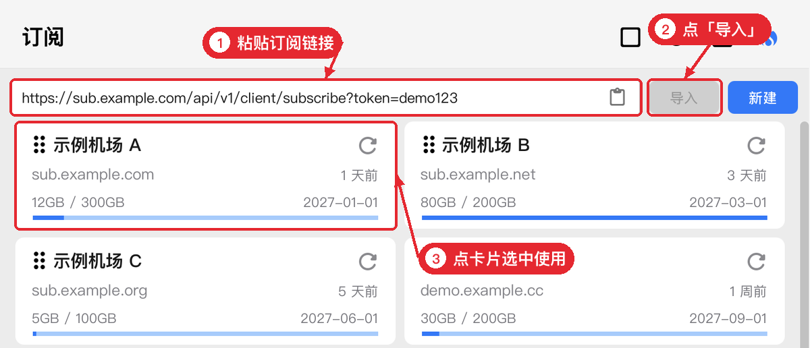
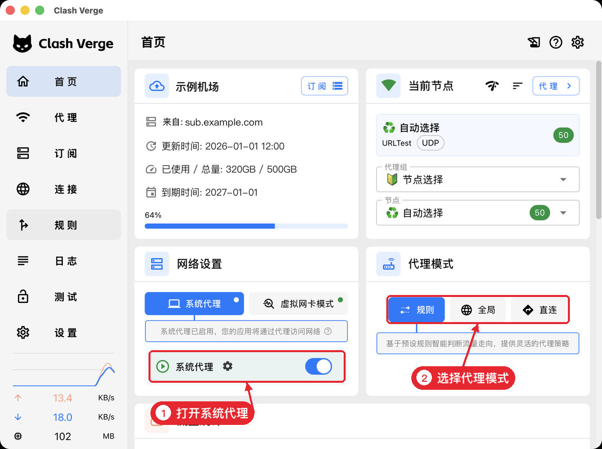
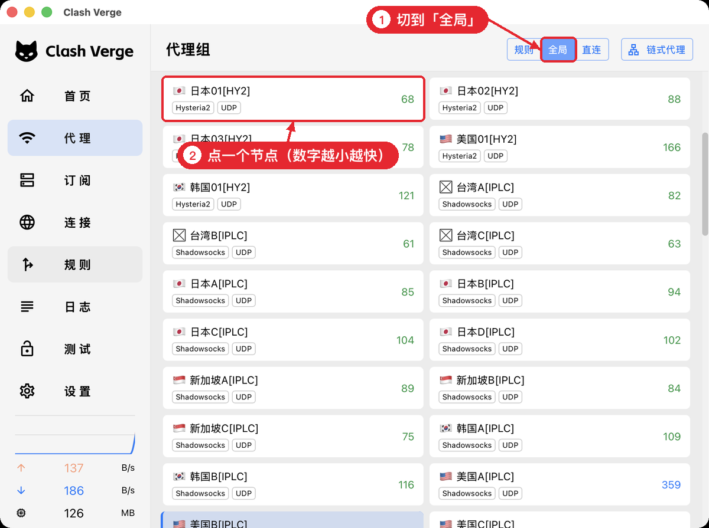
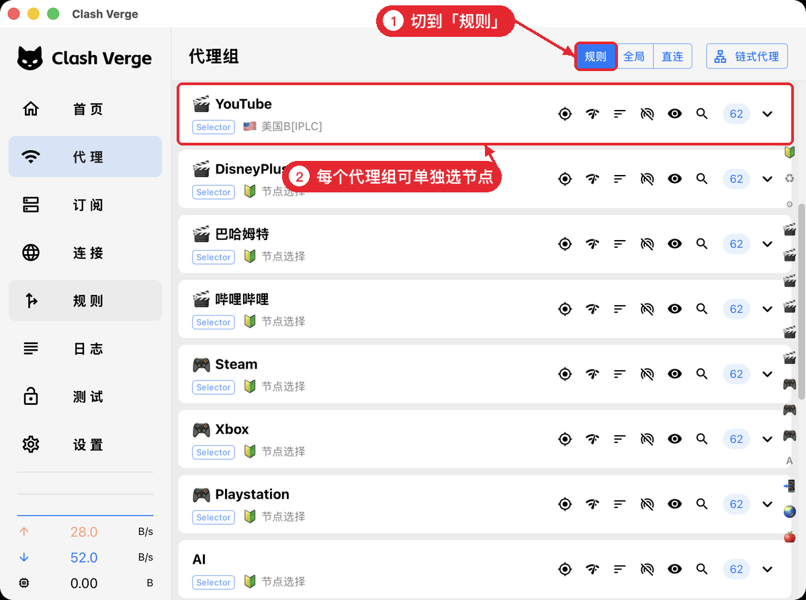
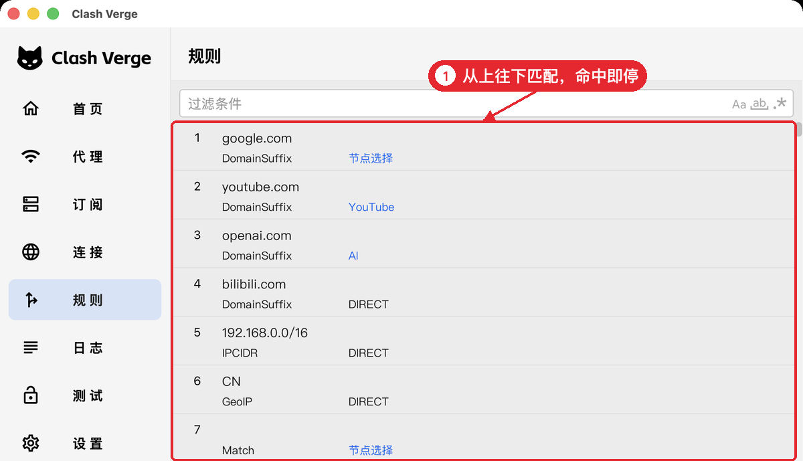
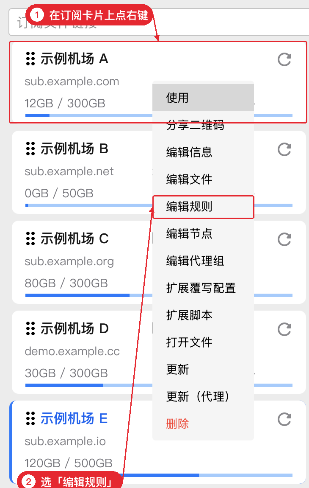
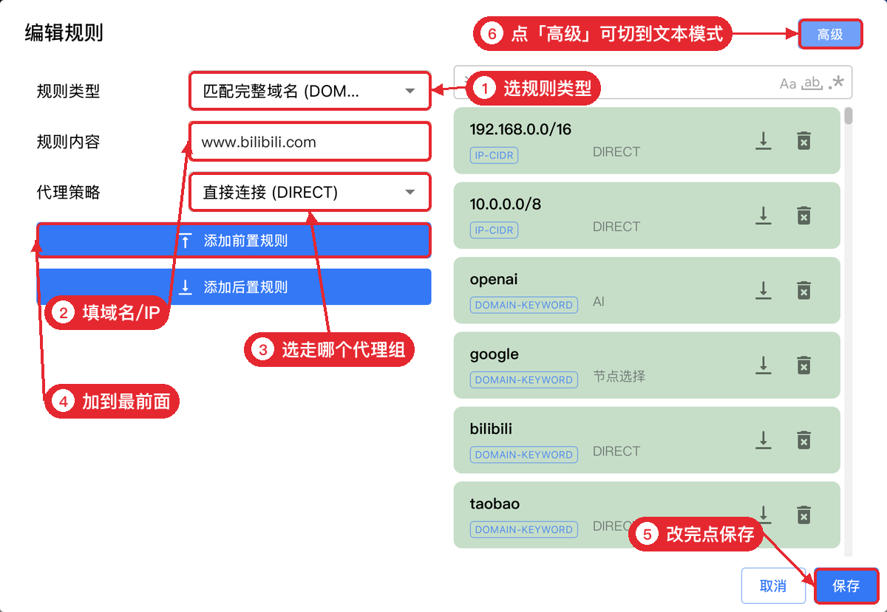
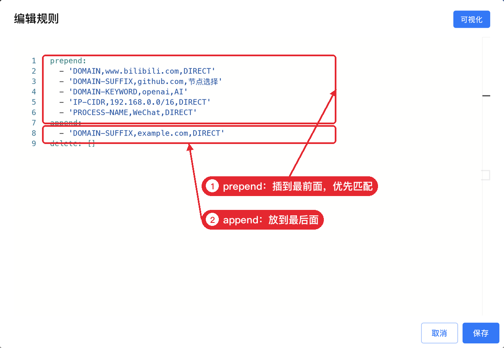
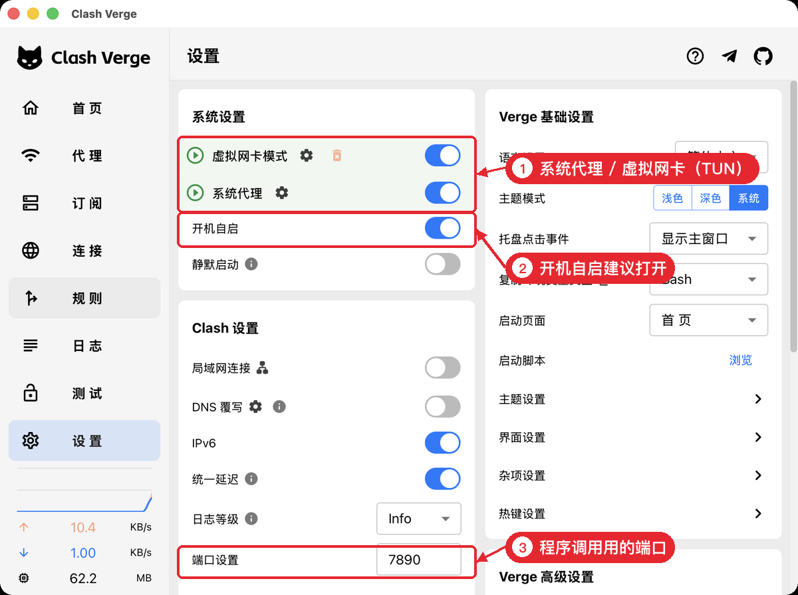

Clash 使用教程：导入订阅、开启代理、全局模式与规则模式
大部分人用 Clash，其实只需要会三件事：导入订阅、打开代理、选节点。会了这三步就能正常用了，再进阶一点就是「规则模式」。
下面以 Clash Verge 为例，Windows 和 macOS 界面基本一样。
文中截图里的机场名称、订阅链接都是演示数据。截图上的红色编号和方框，对应正文里的操作步骤。
第一步：导入订阅
买了机场（代理服务）之后，后台一般会给你一个 订阅链接，复制它。
打开 Clash，进入左侧「订阅」页面：
- 把订阅链接粘贴到顶部的「订阅文件链接」输入框
- 点「导入」
- 导入成功后下方会多出一张订阅卡片，点一下这张卡片 让它变成选中状态（蓝色边框），表示当前使用这份订阅

卡片上能看到已用流量、总流量和到期时间。卡片右上角的刷新按钮可以手动更新订阅，机场换了节点时点一下就行。
第二步：打开系统代理
导入订阅只是拿到了节点，还要 打开代理开关 才会真正生效。
回到「首页」，在「网络设置」里打开「系统代理」开关：

打开后，浏览器等支持系统代理的软件就会走 Clash 了。首页还能看到当前订阅、当前节点和代理模式，平时看这一页就够了。
有些软件不认系统代理（比如部分命令行工具、游戏），这时可以打开旁边的「虚拟网卡模式」，也就是 TUN 模式，下文有详细讲解。
第三步：全局模式 + 选节点
新手最省心的用法是 全局模式：所有流量都走你选的节点，不用操心规则。
进入「代理」页面，右上角点「全局」，下面会列出所有节点，点一个就是切换到这个节点：

- 节点右边的数字是延迟（毫秒），越小越快，可以点上方的测速按钮刷新
- 打不开网页时，先换个延迟低的节点试试
到这里，Clash 的基础用法就全部完成了：导入订阅 → 打开系统代理 → 全局模式选节点。
进阶：规则模式
全局模式有个问题：国内网站也会绕到国外节点，访问 B 站、淘宝反而变慢，有的国内网站还会因为 IP 在国外不让用。
规则模式 就是解决这个问题的：按规则自动判断，国外网站走代理，国内网站直连。
在「代理」页面右上角点「规则」，看到的就不再是一个节点列表，而是一个个「代理组」：

可以这样理解：
- 代理组：一类流量用哪个节点。比如「YouTube」组决定看 YouTube 用哪个节点，「AI」组决定访问 ChatGPT 这类网站用哪个节点
- 节点选择：大部分代理组默认跟着「节点选择」走，所以平时只要在「节点选择」里选好节点就行
- 想让某类网站单独用某个节点，就展开对应的代理组单独选
那规则长什么样？左侧「规则」页面可以看到当前订阅里的所有规则，从上往下匹配，命中第一条就按它处理：

每条规则就三部分：匹配什么、怎么匹配、交给谁。比如：
| 规则 |
意思 |
DOMAIN-SUFFIX,google.com,节点选择 |
以 google.com 结尾的网站，走「节点选择」里的节点 |
DOMAIN-SUFFIX,bilibili.com,DIRECT |
B 站直连，不走代理 |
IP-CIDR,192.168.0.0/16,DIRECT |
局域网地址直连 |
GEOIP,CN,DIRECT |
IP 在国内的，直连 |
MATCH,节点选择 |
上面都没匹配到的，兜底走代理 |
机场的订阅一般已经写好了几百上千条规则，普通用户直接用就行，不需要自己写。
如果遇到更复杂的需求，比如某个网站一定要走某个节点、给某个软件单独分流、写覆写脚本这类不常用的配置，不用死记规则语法，直接把需求和你的配置丢给 AI，让它帮你写规则就行。
自己添加一条规则
订阅自带的规则不满足需求时，比如想让某个网站直连，或者让某个网站固定走代理，可以自己加规则。Clash Verge 提供了「可视化」和「高级」两种编辑方式。
第一步：打开规则编辑器。在「订阅」页面，对 正在使用的那个订阅 点右键，选「编辑规则」：

第二步：可视化编辑。左边填一条规则，右边是已有的规则列表：

- 规则类型：怎么匹配。常用的有「匹配完整域名 DOMAIN」「匹配域名后缀 DOMAIN-SUFFIX」「匹配域名关键字 DOMAIN-KEYWORD」「匹配 IP 段 IP-CIDR」
- 规则内容：填域名或 IP，比如
www.bilibili.com
- 代理策略：命中后交给谁。选「直接连接 DIRECT」就是直连，选「节点选择」或其他代理组就是走代理
- 点「添加前置规则」，这条规则会插到最前面，比订阅自带的规则先匹配；「添加后置规则」则放到最后
- 改完点「保存」，规则马上生效
上面这个例子的意思是：访问 www.bilibili.com 时直连，不走代理。
也可以用「高级」模式直接改文本。点右上角「高级」，就能看到规则的 YAML 文本，适合一次加很多条：

prepend: # 插到最前面，优先匹配
- 'DOMAIN,www.bilibili.com,DIRECT'
- 'DOMAIN-SUFFIX,github.com,节点选择'
- 'DOMAIN-KEYWORD,openai,AI'
- 'IP-CIDR,192.168.0.0/16,DIRECT'
- 'PROCESS-NAME,WeChat,DIRECT' # 按进程名匹配：微信直连
append: # 放到最后面
- 'DOMAIN-SUFFIX,example.com,DIRECT'
delete: [] # 要删掉的订阅自带规则
每一行都是 类型,内容,策略 三段，策略写的名字要和「代理」页面里的代理组名称一致（比如 节点选择、AI），名字里带表情符号的也要原样写上，不然规则不生效。
小提示：这里加的规则是保存在本地的「增强配置」里，订阅更新时不会被覆盖。
全局、规则、直连怎么选？
- 规则：日常推荐，国内国外自动分流
- 全局：某个国外网站在规则模式下打不开时，临时切到全局试试
- 直连：相当于临时关掉代理
可选配置
在「设置」页面还有几个常用开关：

- 开机自启：建议打开。打开系统代理后，如果开机没启动 Clash，会出现没有网络的情况
- 端口设置：默认 7890，自己写程序调用代理时用，比如
http://127.0.0.1:7890
- 外部控制：程序自动化控制 Clash 用，可以搜索「Clash API」了解
写爬虫想让程序轮流使用订阅里的多个节点？看这篇进阶用法：Clash 进阶：把订阅节点提取出来，部署成爬虫可用的代理池
TUN模式
🧠 什么是 Clash 的 TUN 模式？
一句话解释：
TUN 模式 = 让 Clash 接管你的整个网络流量，就像“虚拟网卡代理所有请求”。
不需要软件自己支持代理、不需要配置系统代理，
任何程序的流量都会被自动接管、自动分流。
这和 Windows 的“系统代理”、浏览器代理完全不是一个级别。
🧩 先理解什么是 TUN？
“TUN” 是 Linux/Windows/Mac 的一种虚拟网卡类型，全称：
TUN = network TUNnel interface
特点是：
- 是一个虚拟的网络接口（虚拟网卡）
- 所有 IP 层数据都可以重定向到用户态程序
- Clash 可以通过它截获、处理、转发你的网络流量
形象理解：
TUN = 把你的电脑网线拔了 → 接到 Clash 上 → Clash 再帮你接出去。
🚀 TUN 模式有什么用？
1. 让所有软件自动走代理（最强功能）
普通系统代理，只会代理支持 HTTP/SOCKS5 的软件，例如：
- 浏览器
- Python requests（你得自己写 proxies）
- curl（你得带
--proxy）
但是很多软件不支持代理，例如：
- 游戏
- APP 客户端
- 内置浏览器
- 某些桌面软件
- 一些自写脚本，甚至你忘记给代理参数
这些软件 系统代理根本接管不了。
但 TUN 模式可以：
✔ 强制所有软件的流量都经过 Clash
✔ 包括 TCP、UDP
✔ 包括不支持代理的程序
这就是为什么 Clash+TUN 模式能让“所有流量自动代理”。
2. 对爬虫程序来说的好处
你的 Python 代码可以：
- 不写 proxies 参数
- 不设置 HTTP/SOCKS
- 不改代码任何地方
也能自动走你当前 Clash 节点。
例如你的 requests 写成这样：
import requests
requests.get("https://www.google.com")
依然会走 Clash。
这就是为什么很多爬虫开发者特别喜欢开 TUN 模式。
3. 更强的分流能力（系统代理做不到）
TUN 能做到：
- Google 走节点 A
- GitHub 走节点 B
- 国内网站直连
- 某些游戏走游戏线路
- 某些 IP 走黑名单线路
- 自定义复杂规则
这些是普通系统代理完全无法做到的。
⚒️ TUN 模式内部是怎么工作的？（技术版）
流程如下：
-
Clash 创建一个 TUN 虚拟网卡
-
操作系统把所有流量（透明代理）导向这个 TUN
-
进入 Clash → Clash 按规则处理流量
-
Clash 再决定：
- 直连
- 通过节点代理发出
- 或走其他协议（如 REDIR、SOCKS、HTTP）
这就是一个“透明代理”系统：
捕获 → 解析 → 代理 → 回包 → 返回给系统 → 软件无感知
整个过程软件完全不知道你用代理。
🧪 为什么它比系统代理强很多？
| 场景 |
系统代理 |
TUN 模式 |
| 浏览器 |
✔ |
✔ |
| Python requests |
要自己写 proxies |
自动代理 |
| 游戏 |
❌ |
✔ |
| APP 客户端 |
❌ |
✔ |
| 内网穿透 |
❌ |
✔ |
| 分流粒度 |
弱 |
超强 |
| UDP 支持 |
部分支持 |
完整支持 |
结论只有一句：
TUN = Clash 的真正完全体。
⚠️ 使用 TUN 的注意点
- Windows 上需要管理员权限
- 某些 VPN 会冲突
- 某些公司网络会检测到虚拟网卡
- 有时需要关闭“系统 DPI 加速”或“游戏加速器”
- 如果你的爬虫跑在服务器上，不要开 TUN（会代理整个机器）
🔥 最后一段总结（通俗版）
如果说：
- 系统代理 = 告诉一些软件走代理
- TUN 模式 = 强制所有软件都走 Clash，由 Clash 负责接管一切
那么 TUN 就是：
“一键强制全局代理 + 自动分流 + 不修改软件设置的终极代理模式”